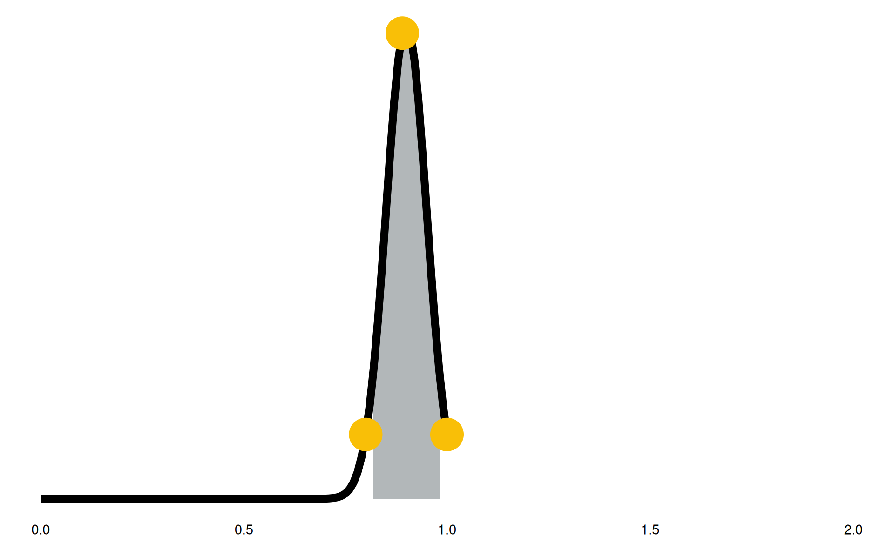

flowchart TB classDef orange fill:#f9bf07,stroke:#2c2825,color:#2c2825; classDef lightslate fill:#b2b7b9,stroke:#2c2825,color:#2c2825; A[Data Extraction] B[Inputs App] C[Model] D[Outputs App] SB[(input app data)] SC[(model data)] SD[(results data)] A ---> SB A ---> SC SB ---> B SC ---> C B ---> C C ---> SD SD ---> D B -.-> D class A,B,C,D orange class SB,SC,SD lightslate
An Introduction to the New Hospital Programme Demand Model
HACA 2023
Jul 11, 2023
The team


A hospital is a place where you can find people…
- having the best day of their life,
- the worst day of their life,
- the first day of their life,
- and the last day of their life.
Planning is hard

- built with enough capacity to replace the existing school
- failed to take into account a new housing estate
- likely needs double the number of spaces within the next decade
Review of existing models
Review of existing models
- lots of models
- lots of external consultancies
- lots of similarities
- lots of repetition/duplication
- sufficiently different that comparing results is difficult
- methodological progress slow
- no base to build from
Common issues
- handling uncertainty
- unnecessary/early aggregation
- poor coverage of some changes
- lack of ownership & auditability of assumptions
- conflating demand forecasting with affordability
“How much, and what types of activity might a hospital need to accommodate in the future?”
Our model
open source(not quite yet…)- uses standard, well-known datasets (e.g. HES, ONS population projections)
- currently handles Inpatient admissions, Outpatient attendances, and A&E arrivals
- extensible and adaptable
- covering all of the change factors
- stochastic Monte-Carlo model to handle uncertainty
Project Structure
- Data Extraction (R +
{targets}& Sql) - Inputs App (R +
{shiny}) - Outputs App (R +
{shiny}) - Model Engine (Python & Docker)
- Azure Infrastructure (VM/ACR/ACI/Storage Accounts)
- All of the code is stored on GitHub (currently, private repos üòî)
Model Overview
- the baseline data is a year worth of a provider’s HES data
- each row in the baseline data is run through a series of steps
- each step creates a factor that says how many times (on average) to sample that row
- the factors are multiplied together and used to create a random Poisson value
- we resample the rows using this random values
- efficiencies are then applied, e.g. LoS reductions, type conversions
Model Diagram
flowchart TB
classDef blue fill:#5881c1,stroke:#2c2825,color:#2c2825;
classDef orange fill:#f9bf07,stroke:#2c2825,color:#2c2825;
classDef red fill:#ec6555,stroke:#2c2825,color:#2c2825;
classDef lightslate fill:#b2b7b9,stroke:#2c2825,color:#2c2825;
classDef slate fill:#e0e2e3,stroke:#2c2825,color:#2c2825;
S[Baseline Activity]
T[Future Activity]
class S,T red
subgraph rr[Row Resampling]
direction LR
subgraph pop[Population Changes]
direction TB
pop_p[Population Growth]
pop_a[Age/Sex Structure]
pop_h[Population Specific Health Status]
class pop_p,pop_a,pop_h orange
pop_p --- pop_a --- pop_h
end
subgraph dsi[Demand Supply Imbalances]
direction TB
dsi_w[Waiting List Adjustment]
dsi_r[Repatriation/Expatriation]
dsi_p[Private Healthcare Dynamics]
class dsi_w,dsi_r,dsi_p orange
dsi_w --- dsi_r --- dsi_p
end
subgraph nsi[Need Supply Imbalances]
direction TB
nsi_g[Gaps in Care]
nsi_i[Inequalities]
nsi_t[Threshold Imbalances]
class nsi_g,nsi_i,nsi_t orange
nsi_g --- nsi_i --- nsi_t
end
subgraph nda [Non-Demographic Adjustment]
direction TB
nda_m[Medical Interventions]
nda_c[Changes to National Standards]
nda_p[Patient Expectations]
class nda_m,nda_c,nda_p orange
nda_m --- nda_c --- nda_p
end
subgraph mit[Activity Mitigators]
direction TB
mit_a[Activity Avoidance]
mit_t[Type Conversion]
mit_e[Efficiencies]
class mit_a,mit_t,mit_e orange
mit_a --- mit_t --- mit_e
end
pop --- dsi --- nsi --- nda --- mit
class dsi,nsi,pop,nda,mit lightslate
end
class rr slate
S --> rr --> T
Model Diagram
flowchart TB
classDef blue fill:#5881c1,stroke:#2c2825,color:#2c2825;
classDef orange fill:#f9bf07,stroke:#2c2825,color:#2c2825;
classDef red fill:#ec6555,stroke:#2c2825,color:#2c2825;
classDef lightslate fill:#b2b7b9,stroke:#2c2825,color:#2c2825;
classDef slate fill:#e0e2e3,stroke:#2c2825,color:#2c2825;
S[Baseline Activity]
T[Future Activity]
ORANGE[Implemented]
BLUE[Not yet implemented]
class ORANGE orange
class BLUE blue
class S,T red
subgraph rr[Row Resampling]
direction LR
subgraph pop[Population Changes]
direction TB
pop_p[Population Growth]
pop_a[Age/Sex Structure]
pop_h[Population Specific Health Status]
class pop_p,pop_a,pop_h orange
pop_p --- pop_a --- pop_h
end
subgraph dsi[Demand Supply Imbalances]
direction TB
dsi_w[Waiting List Adjustment]
dsi_r[Repatriation/Expatriation]
dsi_p[Private Healthcare Dynamics]
class dsi_w,dsi_r orange
class dsi_p blue
dsi_w --- dsi_r --- dsi_p
end
subgraph nsi[Need Supply Imbalances]
direction TB
nsi_g[Gaps in Care]
nsi_i[Inequalities]
nsi_t[Threshold Imbalances]
class nsi_g,nsi_i,nsi_t blue
nsi_g --- nsi_i --- nsi_t
end
subgraph nda [Non-Demographic Adjustment]
direction TB
nda_m[Medical Interventions]
nda_c[Changes to National Standards]
nda_p[Patient Expectations]
class nda_m,nda_c,nda_p blue
nda_m --- nda_c --- nda_p
end
subgraph mit[Activity Mitigators]
direction TB
mit_a[Activity Avoidance]
mit_t[Type Conversion]
mit_e[Efficiencies]
class mit_a,mit_t,mit_e orange
mit_a --- mit_t --- mit_e
end
pop --- dsi --- nsi --- nda --- mit
class dsi,nsi,pop,nda,mit lightslate
end
class rr slate
S --> rr --> T
Monte Carlo Simulation
- We run the model N times, varying the input parameters each time slightly to handle the uncertainty.
- The results of the model are aggregated at the end of each model run
- The aggregated results are combined at the end into a single file
flowchart LR classDef orange fill:#f9bf07,stroke:#2c2825,color:#2c2825; classDef red fill:#ec6555,stroke:#2c2825,color:#2c2825; A[Baseline Activity] Ba[Model Run 0] Bb[Model Run 1] Bc[Model Run 2] Bd[Model Run 3] Bn[Model Run n] C[Results] A ---> Ba ---> C A ---> Bb ---> C A ---> Bc ---> C A ---> Bd ---> C A ---> Bn ---> C class A,C red class Ba,Bb,Bc,Bd,Bn orange
Model Parameters
- We ask users to provide parameters in the form of 90% confidence intervals
- We can then convert these confidence intervals into distributions
- During the model we sample values from these distributions for each model parameter
- All of the parameters represent the average rate to sample a row of data from the baseline
Model Parameters
“We expect in the future to see between a 25% reduction and a 25% increase in this activity”
- grey highlighted section: 90% confidence intervals
- black line: confidence intervals into distributions
- yellow points: sampled parameter for a model run
Model Parameters
“We expect in the future to see between a 20% reduction and a 90% reduction in this activity”
- grey highlighted section: 90% confidence intervals
- black line: confidence intervals into distributions
- yellow points: sampled parameter for a model run
Model Parameters
“We expect in the future to see between a 2% reduction and an 18% reduction in this activity”
- grey highlighted section: 90% confidence intervals
- black line: confidence intervals into distributions
- yellow points: sampled parameter for a model run

Model Run Example (1)
| id | age | sex | specialty | los | f |
|---|---|---|---|---|---|
| 1 | 50 | m | 100 | 4 | 1.00 |
| 2 | 50 | m | 110 | 3 | 1.00 |
| 3 | 51 | m | 120 | 5 | 1.00 |
| 4 | 50 | f | 100 | 1 | 1.00 |
| 5 | 50 | f | 110 | 2 | 1.00 |
| 6 | 52 | f | 120 | 0 | 1.00 |
Start with baseline data - we are going to sample each row exactly once (column f).
Model Run Example (2)
| id | age | sex | specialty | los | f |
|---|---|---|---|---|---|
| 1 | 50 | m | 100 | 4 | 1.00 |
| 2 | 50 | m | 110 | 3 | 1.00 |
| 3 | 51 | m | 120 | 5 | 1.00 |
| 4 | 50 | f | 100 | 1 | 1.00 |
| 5 | 50 | f | 110 | 2 | 1.00 |
| 6 | 52 | f | 120 | 0 | 1.00 |
| age | sex | f |
|---|---|---|
| 50 | m | 0.90 |
| 51 | m | 1.10 |
| 52 | m | 1.20 |
| 50 | f | 0.80 |
| 51 | f | 0.70 |
| 52 | f | 1.30 |
| f |
|---|
| 1.00 × 0.90 = 0.90 |
| 1.00 × 0.90 = 0.90 |
| 1.00 × 1.10 = 1.10 |
| 1.00 × 0.80 = 0.80 |
| 1.00 × 0.80 = 0.80 |
| 1.00 × 1.30 = 1.30 |
We perform a step where we join based on age and sex, then update the f column.
Model Run Example (3)
| id | age | sex | specialty | los | f |
|---|---|---|---|---|---|
| 1 | 50 | m | 100 | 4 | 0.90 |
| 2 | 50 | m | 110 | 3 | 0.90 |
| 3 | 51 | m | 120 | 5 | 1.10 |
| 4 | 50 | f | 100 | 1 | 0.80 |
| 5 | 50 | f | 110 | 2 | 0.80 |
| 6 | 52 | f | 120 | 0 | 1.30 |
| specialty | f |
|---|---|
| 100 | 0.90 |
| 110 | 1.10 |
| f |
|---|
| 0.90 × 0.90 = 0.81 |
| 0.90 × 1.10 = 0.99 |
| 1.10 × 1.00 = 1.10 |
| 0.80 × 0.90 = 0.72 |
| 0.80 × 1.10 = 0.88 |
| 1.30 × 1.00 = 1.30 |
The next step joins on the specialty column, again updating f. Note, if there is no value to join on, then we multiply by 1.
Model Run Example (4)
| id | age | sex | specialty | los | f | n |
|---|---|---|---|---|---|---|
| 1 | 50 | m | 100 | 4 | 0.90 | 1 |
| 2 | 50 | m | 110 | 3 | 0.90 | 0 |
| 3 | 51 | m | 120 | 5 | 1.10 | 2 |
| 4 | 50 | f | 100 | 1 | 0.80 | 1 |
| 5 | 50 | f | 110 | 2 | 0.80 | 0 |
| 6 | 52 | f | 120 | 0 | 1.30 | 3 |
| id | age | sex | specialty | los |
|---|---|---|---|---|
| 1 | 50 | m | 100 | 4 |
| 3 | 51 | m | 120 | 5 |
| 3 | 51 | m | 120 | 5 |
| 4 | 50 | f | 100 | 1 |
| 6 | 52 | f | 120 | 0 |
| 6 | 52 | f | 120 | 0 |
| 6 | 52 | f | 120 | 0 |
Once all of the steps are performed, sample a random value n from a Poisson distribution with λ=f, then we select each row n times.
Model Run Example (5)
| id | age | sex | specialty | los | g |
|---|---|---|---|---|---|
| 1 | 50 | m | 100 | 4 | 0.75 |
| 3 | 51 | m | 120 | 5 | 0.50 |
| 3 | 51 | m | 120 | 5 | 1.00 |
| 4 | 50 | f | 100 | 1 | 0.90 |
| 6 | 52 | f | 120 | 0 | 0.80 |
| 6 | 52 | f | 120 | 0 | 0.80 |
| 6 | 52 | f | 120 | 0 | 0.80 |
| id | age | sex | specialty | los |
|---|---|---|---|---|
| 1 | 50 | m | 100 | 2 |
| 3 | 51 | m | 120 | 1 |
| 3 | 51 | m | 120 | 5 |
| 4 | 50 | f | 100 | 0 |
| 6 | 52 | f | 120 | 0 |
| 6 | 52 | f | 120 | 0 |
| 6 | 52 | f | 120 | 0 |
After resampling, we apply efficiency steps. E.g., similar joins are used to create column g, which is then used to sample a new LOS from a binomial distribution.
How the model is built
- The model is built in Python and can be run on any machine you can install Python on
- Uses various packages, such as
numpyandpandas - Reads data in
.parquetformat for efficiency - Returns aggregated results as a
.jsonfile - Could also output full row level results if needed
How the model is built
- Code is built in a modular approach
- Each activity type (Inpatients/Outpatients/A&E) has its own model code
- Code is reused where possible (e.g. all three models share the code for demographic adjustment)
How the model is deployed
- Deployed as a Docker Container
- Runs in Azure Container Instances
- Each model run creates a new container, and the container is destroyed when the model run completes
Data Extraction
- Uses principles of RAP, using R +
{targets}and Sql - All of the data required to run the model
- Data is extracted from various sources
- Sql Datawarehouse (HES data)
- ONS population projections + life expectancy tables
- Central returns, e.g. KH03
- ODS data (organisation names, successors)
- Extracted data is uploaded to Azure storage containers
Inputs App
A {shiny} app that allows the user to set parameters, and submit as a job to run the model with those values.

Inputs App

Outputs App
A {shiny} app that allows the user to view the results of model runs.
Outputs App

Questions?
Contact The Strategy Unit
Contact Me
view slides at https://tinyurl.com/haca23nhp